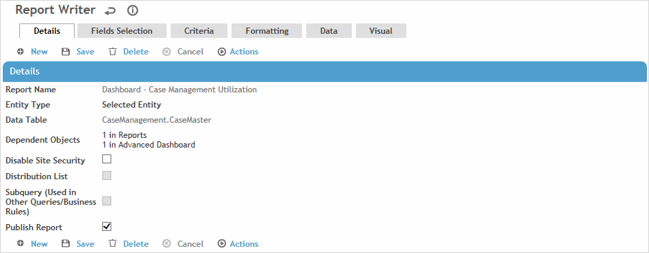
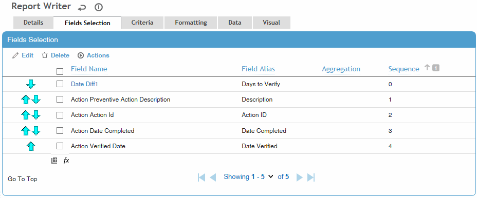
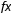
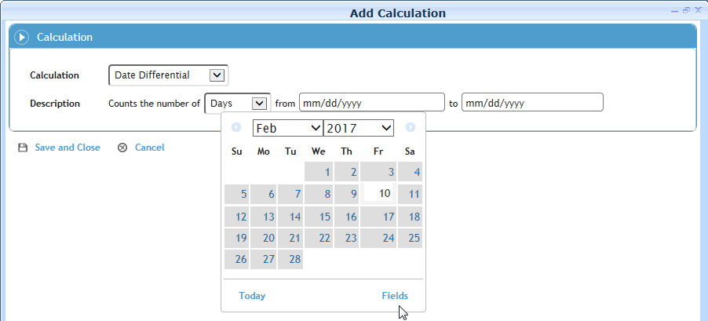
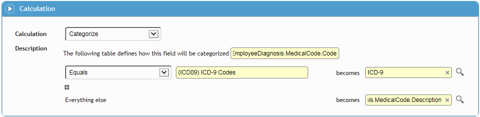
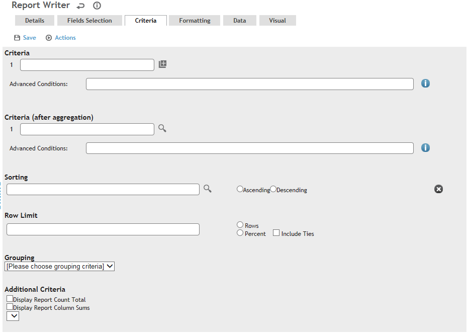
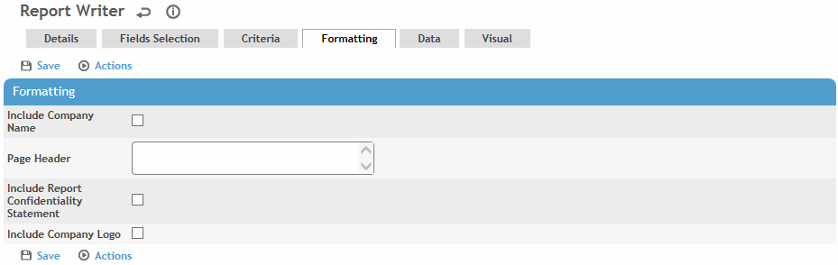
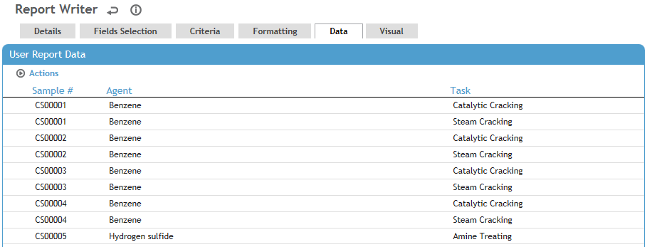

In the Business Intelligence menu, click Report Writer.
Click a link to edit an existing custom report, or click New.
Only
the author, and users granted appropriate permission, may edit or
delete custom reports. If you do not have such permission and make
any changes to a custom report, when you save you are prompted to
enter a different report name. Alternatively, you can create an exact
copy of the report with “Copy” at the end of the report name, as described
in Using
Existing Ad Hoc Reports.
The Dependent Objects field on the
Details tab lists all object types (e.g. business rule, letter template,
dashboard views, custom metrics, etc.) that reference the report.
Each object type is a clickable link that allows you to open the the
object to unlink or modify it before editing or deleting the report.
If the object is another Report Writer report, it will appear in the
Dependent Objects list only if
you are permitted to view it.
To export a report’s configuration as a JSON file, choose Actions»Export Report Configurations. Conversely, you can import a JSON file to create a report. An administrator can migrate reports from one environment to another; see Migrating Configurations. All reports will be created as new records
On the Details tab, enter the following information:

Enter a Name for the report.
Select the Entity Type, then select the Entity, that the report will be based on. The entities are the tables or subqueries that the data will be pulled from.
If you have appropriate permissions, you may specify multiple entities to combine data. System performance will be affected if you make a large report that joins many entities. Select the additional Entity, then identify what fields should be matched to be included in the query. First select the Child Matching Fields; that is, one or more fields from the additional entity you just added. Then select the Parent Matching Field; that is, one or more fields from any entity above the entity you just added. For each child entity, indicate if all parent records should be included or only matching records.
For example, to create a report that presents lost and restricted work days, add the IncidentOshaCountsCubeByMonthTemp and Case Master entities, then join them using the Case ID for the Parent Matching Field.
If you change the Entity of a previously saved report, settings on the remaining tabs will be cleared. If you change only the Child Matching Field or Parent Matching Field, the Field Selection and Criteria tabs will retain their selections.
If you are creating a subquery that will be joined with another subquery in a new report but there is no common field to join them, create an “Arithmetic” field with a value of 1 in each subquery.
Indicate if you want to Disable Site Security, e.g. for summary reports or if the report does not contain sensitive information. This also applies to the regular and Advanced Dashboard; exported Query Builder and Report Writer reports; subqueries used in reports, letters, and business rules; OData; and the Report Writer Utility.
If this checkbox is selected, site security is not applied to any entities.
If not selected, site security will apply only to the main entity selected.
For reports that were created prior to 2018.3, the checkbox will be unselected. If a report is used as a subquery in another report, the data in each report will be filtered according to their respective Site Security settings.
Indicate if this query is to create a Distribution List for use in scheduled reports or Business Rule Email Actions.
If this query will be used in a business rule, letter template, custom measure or other report, select the Subquery checkbox. This will help minimize the risk of a user editing or deleting the report and breaking other workflows that use it. A subquery cannot be deleted if it is in use; the association must be removed first.
If you want to filter the subquery by a field value that is not in the main source entity on the Details tab, select the Filter Entity. Then on the Criteria tab add a filter (for an integer, number or string field type), select the “Is Filtered By” operator and select a field from the Filter Entity. A business rule configured to trigger on condition of this subquery will fire only for the configured field filter. (Note: The data preview on the Data tab will show the data unfiltered by this condition because the report won't be filtered by that condition until the business rule is triggered.)
When a Report Writer report uses a subquery, that report cannot be used as a subquery in another report. When a report is being used as a subquery, that report cannot be edited.
If you want other users to be able to use this report (and you have the appropriate permission), select Publish Report. The report is added to the list of standard reports available by module (linked to the module associated with the Selected Entity). Users can modify the report criteria without saving their criteria changes or save it as a new query. See Generating Standard Reports.
The original ad hoc report is also still available in the User Reports list. The user who created the report can change the criteria which will be reflected in the published report. Other users can open a shared report and run it with different criteria without saving it as a new query.
To remove a published report from the standard Reports list, clear Publish Report. You cannot delete an ad hoc report that has been published; you must clear Publish Report first.
On the Fields Selection tab, select the fields that you want to include on the report:

Click the “add” icon
 (see
Adding
New Records).
(see
Adding
New Records).From the list of available fields (according to the entity table(s) selected on the Details tab), select the required field(s), then click Finish. You are limited to 100 fields (including calculated fields) to ensure that server performance is not negatively impacted.
The Field Name is prefixed with the name of the associated entity; to use a shorter or more user-friendly name, select the field and click Edit, then enter the Field Alias. The new name appears on outputs and on the Visual tab (Select Field to Graph list).
To specify the fields to be aggregated, select the field(s) and click Edit, then select the Aggregation type; the options vary depending if the field is numeric, Boolean, or neither.
If an aggregation type is defined for at least one field, data is grouped by the remaining fields that do not have an aggregation type defined. If no aggregation type is defined for any of the fields, data is not grouped.Fields appear on the report according to the Sequence number, which is initially set according to the order they were added. To change the field order, use the arrows to move fields up or down; the Sequence numbers are updated to reflect the order of the fields shown.
If you are creating a Distribution List of
- employees: one of the columns must be Employee #
- Cority users:
one of the columns must be Login Name
- email addresses: one of the columns must be Email Address.
If you are creating a subquery for use in a custom
measure:
- the first column must be a number field (e.g. Amount)
- the second column must be a date/time field
- subsequent columns must be the GDDLOFB ID fields, in that order)
Note that the Subquery field is not available on default custom measure
layouts.
You can create a field that applies a calculation to one or more other fields. For example, if you want to monitor that corrective actions are verified in a timely manner after completion, you can create a field that calculates the number of days between those two dates. While the fields in the calculation do not have to be included in the Field Selection, a calculation field can be used by another calculation field (as long as the output type of the first field matches the required input type of the field using it). To create a calculated field, click

and select the Calculation type:
Date Component Name, Date Component Number - Pull the name or number of a component of a selected date field. For example, the name of the month or day, or various number options such as the calendar year/quarter/month, etc., day of year/week, hour or minute.
Date Differential - Calculate the amount of time between two dates, which can be hard dates selected from a calendar or any date field in the selected data table.
Time Differential - Calculate the amount of time between any two time or date/time fields in the system. There are several fields available for this calculation that are not included in form layouts; for example, TreatmentDateTime combines the Treatment Date and Treatment Time.
Accumulation - Calculate the cumulative statistical values for a selected number field; you cannot specify another Accumulation field, the Count Distinct aggregator, or a calculation field that always returns the same value (e.g. a datediff between two constant dates).
Arithmetic - Perform a calculation using the specified arithmetic formula. If you want the calculation to be performed after the data for the field has been aggregated, select the After Aggregation check box. If the checkbox is selected:
- The calculation cannot be selected as a field in the Concatenate Columns, Concatenate Rows, or Categorize calculations.
- If the calculation is then used by another field in the report, the After Aggregation check box becomes disabled and cannot be deselected.
- You can add the calculation to the Criteria tab only in the “Criteria (after aggregation)” section.Round - Round a selected number field to the specified number of decimal places.
Concatenate Columns - Combine values from two or more fields into a single string, with each value separated by a user-defined delimiter such as a comma or semicolon. For example, combine the separate Street, City, Province, Postal Code fields into a single Address field.
Concatenate Rows - Combine values from a given field into a single string, with each value separated by a user-defined delimiter such as a comma or semicolon. For example, you might want one row for each case that includes a field showing all activities, rather than having a separate row for each activity.
Categorize - Define how a particular field’s values will be categorized: either as a fixed output value or as a selected field. For example, you can choose to categorize all employee diagnoses that use an ICD-9 medical code as “ICD-9”, and everything else display the proper medical code description. You can also use this calculation field to group medical conditions by major diagnoses; for example group all diagnoses that are (for example) equal to, or less than, or not equal to a particular medical code:

Convert to Number - convert the values of the selected text field to numeric values (integers or decimals) so that they can be used in other calculations.
The calculation field is added to the Field Selection list, hyperlinked to allow for editing. Calculation fields are treated the same as other fields in Report Writer queries (e.g. as criterion, for selection in visualization, included in the dashboard, etc.). If a calculated field is edited or deleted, any criteria (on the Criteria tab) that uses the calculated field will be deleted automatically from the report.
Calculation fields inherit the security configured
for the fields used to create them. For example, a user will not be
able to view data generated by a calculation field if the field was
created using another field that is prohibited from the user.
If a field is prohibited from a role, any calculated fields that are
based on that field will not be available on the Criteria tab. If
a report has a calculated field that is based on a prohibited field,
the value of the calculated field will be masked using the “XXXX”
format.
On the Criteria tab, define how the data should be filtered, sorted, grouped, and how/if totals will be included.

In the Criteria section, define your filters. The available fields depend on the entity table selected on the Details tab. For more information, see Filtering Records. If you choose a tree field, you can choose a node from either the current tree or a historical tree (select the date). You can optionally choose the fields but leave the filters empty to allow end users to enter their own values.
In the Criteria (after aggregation) section, define filters for any fields identified (on the Fields Selection tab) with an aggregation type.
Anything configured in the Criteria section will be applied to the report query before any aggregation and associated grouping is performed. Anything configured in the Criteria (after aggregation) section will be applied after any aggregation and associated grouping is performed.
If this is a subquery and you want to filter by a field value that is not in the main source entity, select the Filter Entity on the Details tab, then on the Criteria tab add a filter (for an integer, number or string field type), select the “Is Filtered By” operator and select a field from the Filter Entity.
If you are defining a subquery for use in a LettersTemplate, you can limit the letter to only include data related to the record the letter is sent from. In the Criteria section, select a field that ends in “ID”, then in the operator field beside it, select “Equals Main Record ID”. Note that no data will be shown on the Data tab because it must be generated from a record in the application.
Select the field (from the Fields Selection tab) the report should sort on, and the sort order. This sort order also applies to data points selected for graphs unless a specific Field to Sort and sort order is defined on the Visual tab.
Optionally, to limit the amount of data that is returned, enter a number in the Row Limit field and select either Rows or Percent. For example: if you set a row limit of 50% on a report that would normally return 200 rows, the report will return only the first or last 100 rows (depending on the ascending/descending Sorting criteria). If you select Include Ties and the last row returned has ties, those rows will also be included in the report.
The row limit is applied after data is aggregated and grouped, and will be applied wherever the report is used (e.g. in Report Scheduler, Dashboard indicators, etc.). The Row Limit overrides the default Dashboard data point limit of 12.
Optionally, choose any field(s) to group the report by (for best performance, only choose one grouping). For each grouping, select either:
Display Record Count (shows the number of records in that group, beside each group name) or
Display Sum of Columns (choose the column to sum, shows the group sum in the last line of each group).
Optionally, indicate if totals and sums should be displayed for the entire report:
Display Report Count Total (shows the total number of records for the entire report above the report column headers)
Display Report Column Sums (choose the column to sum, shows the grand total sum in the last line of the report).
On the Formatting tab, indicate whether to include the Company Name, the Report Confidentiality Statement, and/or the Company Logo (as defined in the system settings of the same names).
Optionally, enter any further information to appear in the Page Header; this will appear above the report title but below the company logo.

To see the records that match the criteria specified, click the Data tab.

Numeric field values use the format specified in the
Number Style system setting, with the following exceptions:
- For aggregation types Average, Standard Deviation, Standard Deviation
Population, Variance, Variance Population, Percent of Total (Count),
Percent of Total (Sum), Sum, Minimum, and Maximum, the resulting values
will have a maximum of six decimal places.
- For Count and Count Distinct aggregations, the resulting values will
be formatted as whole numbers.
- If the report is exported to CSV or Excel, any aggregation values
will be formatted as raw numbers.
Data may be hidden based on your role and security privileges.
To view the data for any of the selected fields in visual form, click the Visual tab and select the presentation Type.
To have the data appear in the Dashboard as an interactive table, select Table as the Type. The table will be organized according to the options selected on the Criteria tab.
For the “standard” chart types (bar, line, area, point, pie), select which Field to Graph/Drill. A chart can have multiple drill-down levels; the drill-down order is determined by the order in this list. To add, remove, or reorder fields, click
 .
The selection list does not include any fields that have an aggregation
type.
.
The selection list does not include any fields that have an aggregation
type.
If an enum field is selected as the Field to Graph/Drill, then the enum values are displayed (instead of the corresponding numeric values) on the indicator's x-axis and tooltip.For charts only: Select the Value to Graph: either a simple Count of Records or any field defined with an aggregation type that results in a numeric value (Count, Sum, Average, Percent Sum, Percent Count, any Standard Deviation, or any Variance). For single-value visualization types (Radial Gauge, Circular, Number Only), if the query returns more than one value, the indicator will use the first one returned.
For the “standard” chart types, the chart will use
the first Field to Graph/Drill field
for the x coordinates and the Value to Graph for
its y coordinates. That is, the query will group by the Field
to Graph, and aggregate by the Value
to Graph according to the aggregation type specified.
If the user drills down on a data point, it will filter by the value
of that data point and then group by the next field in the Field
to Graph/Drill field.
For Pie charts, each slice will represent a distinct Field
to Graph value, and the value of each slice will be generated
according to what is selected for the Value
to Graph.
For the “standard” chart types, optionally select a Field to Sort by and indicate if it should sort Ascending or Descending (this overrides any sort order indicated on the Criteria tab. This field does not have to be used in the chart. For example, if you are showing data by month, you want to sort it by month number, not by month name. If no Field to Sort is selected, the chart will sort data by the Field to Graph selection.
If the selected Field to Sort does not have an aggregation type or associated grouping, the chart will group data by the Field to Sort, which may result in what appears to be duplicate entries in the chart.
Specify how (or if) Records will open from the Dashboard. This applies to tables and “standard” chart types at the lowest drill-down level. For records opened from charts, you can select which entity to open records from (the From field only lists entities that have an associated layout). For example, if the report includes Case Master and Clinic Visit data, you can specify whether the case record or the clinic visit record would open.
For Radial Gauge charts, enter the Maximum Value on Gauge.
For Circular charts, indicate if the Maximum Value on Gauge value is a static number (and enter the number) or the total of a specified aggregate field. You can also define how color ranges are depicted in dashboard indicators: select the measure to be used for the upper and lower boundaries (can be the same or different) and the colors to represent where the data falls in relation to those ranges.
For the “standard” chart types (bar, line, area, or point), enter the minimum and maximum values to be shown on the X and Y axes. For this functionality to work as expected for an x-axis on a dashboard, you must use Advanced Dashboard and define a numeric field to graph for your x-axis.
If you want to include the chart or table on your Dashboard, enter a Dashboard Indicator Name and click Create/Update Dashboard Indicator. For more information, see Using the Dashboards.
The dashboard indicator will reflect the Criteria tab. If you want to allow dashboard users to add or modify criteria, select an option in the Dashboard Filtering field:
Disabled prevents any further filtering on the indicator.
Enabled For Adding Criteria Only locks the query criteria from view but allows users to add additional criteria fields.
Enabled For Adding and Modifying Criteria allows users to view and modify the query criteria as well as add additional criteria fields.
“Circular” and “Number Only” types can be added to the Advanced Dashboard only.
The “Injuries by Part of Body” report uses a “BodyMap” type that allows the data to be viewed as a heat map on this tab or in a dashboard indicator. For more information, see Monitoring Injuries by Part of Body on a Heat Map.
If you want to save the report template for future queries, click Save. Saved queries can be scheduled for recurring generation; see Scheduling Reports.
Optionally, do one of the following: